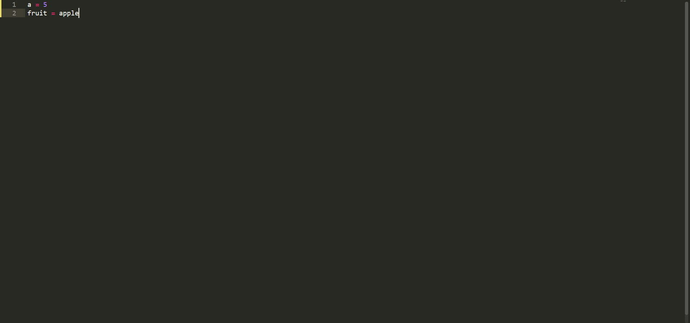

Итак, ваш путь как программиста начнётся пожалуй с самого начального материала, а именно с изучения переменных. С переменными мы, так или иначе встречаемся много где. Переменные есть и в языке Python. Начнём с простого, с определения переменных. Переменные - это своего рода именованные контейнеры для хранения каких либо значений. Значением может быть как число так и любой другой набор символов. Например на картинке ниже вы можете увидеть две разных переменных. Как думаете, чем они отличаются друг от друга? 
Итак, на картинке вы можете увидеть две переменные. Объединяет их то, что они переменные. А различны они в своих названиях и значениях. Вся соль в том, что в переменной fruit вы не можете присвоить значение 5, так же как и переменной а значение apple. Здесь дело заключается в том, что разные типы переменных должны иметь разные значения. Поэтому переменная с числовым значением не может иметь больше одной буквы в названии, также как и переменная со словом не должна иметь только одну букву в названии.
В этом теме вы сегодня узнали что такое переменные, как их создавать и как ими пользоваться.